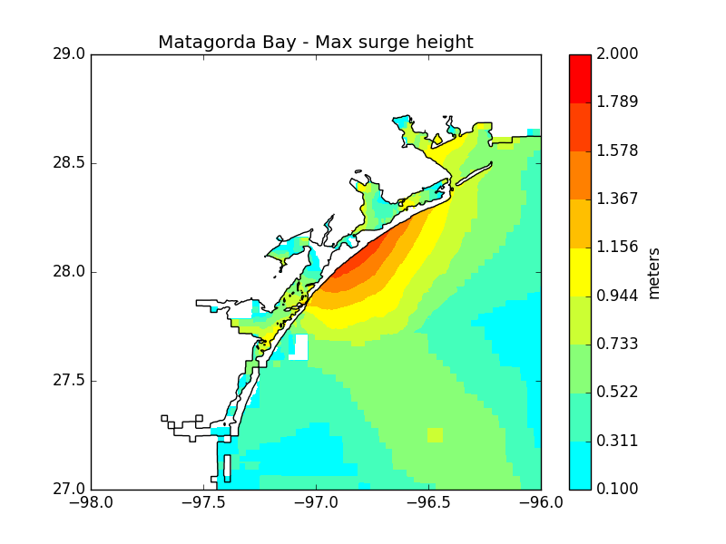
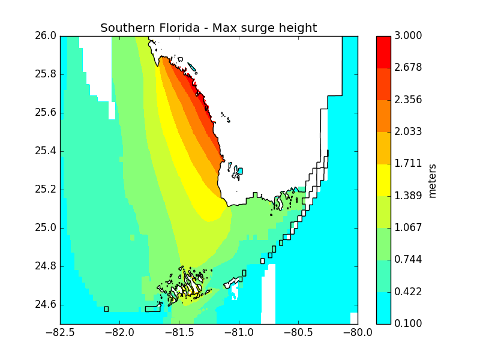

You can download my slides (PDF) and the LaTeX source.
Install GeoClaw as part of ClawPack following the instructions at www.clawpack.org. You'll need Linux or Mac OS X with git and a Fortran compiler (such as GNU Fortran) and make sure to update your environment variables after installing.
Download the source code for Harvey and Irma and extract to the directory $CLAW/geoclaw/examples/storm-surge/ then cd into each directory and type 'make new' then 'make all'.
Plots for maximum surge heights can be found below for Matagorda Bay, Texas, during Hurricane Harvey, and southwest Florida during Hurricane Irma. However, they don't show the whole picture - parts of the Florida coast experienced large negative surge during Irma. You can view the full model output animations here:


Feel free to contact me with any comments or questions: marc.kjerland at gmail